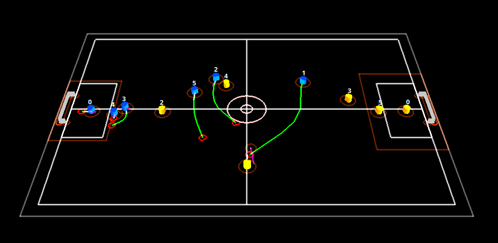
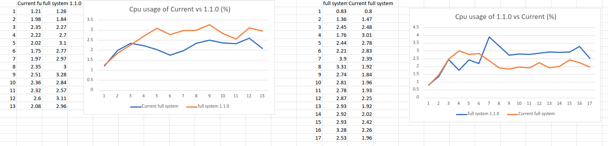

Trajectory Planner Improvements
Making the path planner that every Thunderbots robot runs on safer to trust and cheaper to run.

Every robot on the field replans its path a few times a second. The planner throws out a bunch of candidate trajectories, scores each one, and drives the cheapest. Cost is mostly a penalty for time spent inside an obstacle, so cheapest basically means "crashes into things the least".
I spent about five weeks on this. Three pieces, and they had to go in that order.
Refactor
The scoring lived in one function doing two unrelated jobs: deciding whether it could reuse a cached result, and doing the collision maths itself. Every time I opened it I had to hold both in my head, and anything I wanted to change touched both.
So the first thing I did wasn't a feature. I pulled the collision maths into its own class that owns the obstacle list and the cost weights, and left the planner asking a question instead of doing arithmetic. Behaviour was identical afterwards and the existing tests passed unchanged, which was the whole point. It bought nothing on its own. It just made the next two changes small enough that I could reason about them. (the change)
Stopping
Watching games I noticed the planner would still hand back a move command in situations where every single candidate path ended in a collision. The robot had nothing good available so it picked the least bad option and drove into something at speed.
The fix isn't really an algorithm, it's a judgement call. If the collision is unavoidable, the robot is above 2.0 m/s, and impact is under 0.2s away, stop. That's not free either, because stopping when you didn't have to loses you the ball. So I kept the thresholds conservative and tunable, and checked it by running the sim and logging every time the condition fired, making sure it triggered on the cases I wanted and stayed quiet otherwise. (the change)
Speed
Scoring one trajectory means simulating the robot along it in 0.05s to 0.1s steps and testing every one of those positions against every obstacle. It's O(t x n), and it runs for every candidate, every tick, for every robot. It's the hottest thing in the planner by a mile.
The thing I noticed is that the planner doesn't actually want the cost of each trajectory. It wants the cheapest one. Anything already worse than the current best is going to lose no matter how much worse it is, so computing an exact number for it is just wasted work.
So I made the evaluator accumulate cost as it scans and bail the moment it passes the best cost so far. A rejected candidate skips the backward scan and the mid-trajectory scan, and the mid-trajectory one is the expensive one. This pays off way more than it sounds like it should, because the front collision penalty carries a 3x weight. A trajectory that starts inside an obstacle blows the budget on the first check and bails immediately, and the search generates a ton of those.
Making sure it still picks the same path. An optimisation that quietly changes behaviour is just a bug. This one's safe because of one invariant: the winning trajectory always gets its cost computed in full, it's never the product of an early return. Losers can be approximate, the winner can't. I didn't want to just trust the argument so I tested it directly, keeping the old cost function around and asserting the chosen trajectory's cost matched a full recomputation every tick. It never disagreed.
What it bought. I benchmarked against the previous release by recording Thunderscope next to the system monitor and plotting CPU, running both builds under identical conditions and then again with blue and yellow swapped so any asymmetry between sides would show up.

Averaged over each run it's 2.13% CPU against 2.67%, and 2.13% against 2.59% with the teams swapped. So roughly 18 to 20 percent less CPU for the same output.
That headroom matters more than the percentage makes it sound. Everything on the robot shares one budget and planning is one of several things fighting for it. Cycles the planner doesn't spend are cycles perception and control can have, and a cheaper planner is one you can afford to run more often or search wider with.
Next
The two biggest known problems are untouched. The collision structure has to be rebuilt from scratch to handle moving obstacles, and robots can still oscillate between two candidate sub-destinations and make no progress at all. Both are on the standing list of planner improvements and both are a lot bigger than anything above.